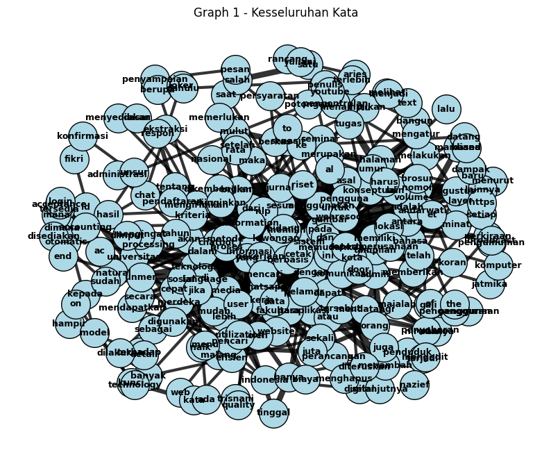
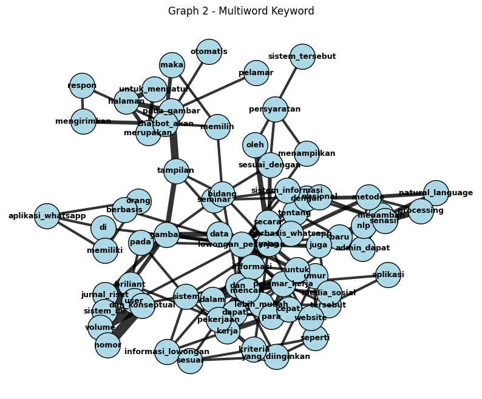
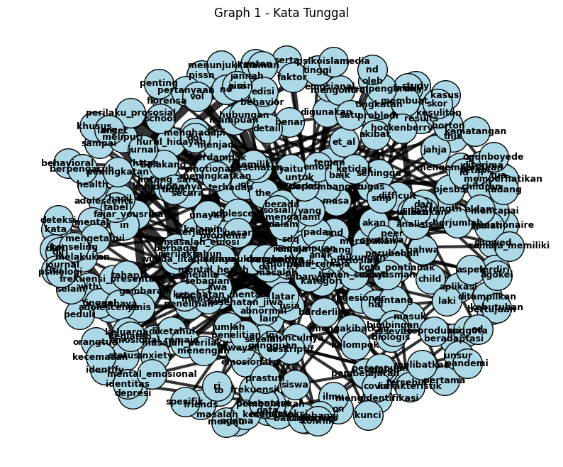
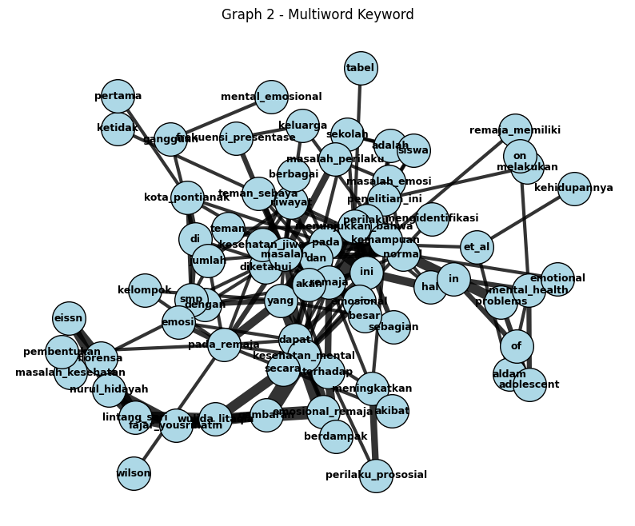

!pip install PyPDF2
^C
Collecting PyPDF2
Using cached pypdf2-3.0.1-py3-none-any.whl.metadata (6.8 kB)
Using cached pypdf2-3.0.1-py3-none-any.whl (232 kB)
Installing collected packages: PyPDF2
Successfully installed PyPDF2-3.0.1
[notice] A new release of pip is available: 25.1.1 -> 25.3
[notice] To update, run: python.exe -m pip install --upgrade pip
!pip install pdfplumber
Requirement already satisfied: pdfplumber in /usr/local/lib/python3.12/dist-packages (0.11.8)
Requirement already satisfied: pdfminer.six==20251107 in /usr/local/lib/python3.12/dist-packages (from pdfplumber) (20251107)
Requirement already satisfied: Pillow>=9.1 in /usr/local/lib/python3.12/dist-packages (from pdfplumber) (11.3.0)
Requirement already satisfied: pypdfium2>=4.18.0 in /usr/local/lib/python3.12/dist-packages (from pdfplumber) (5.2.0)
Requirement already satisfied: charset-normalizer>=2.0.0 in /usr/local/lib/python3.12/dist-packages (from pdfminer.six==20251107->pdfplumber) (3.4.4)
Requirement already satisfied: cryptography>=36.0.0 in /usr/local/lib/python3.12/dist-packages (from pdfminer.six==20251107->pdfplumber) (43.0.3)
Requirement already satisfied: cffi>=1.12 in /usr/local/lib/python3.12/dist-packages (from cryptography>=36.0.0->pdfminer.six==20251107->pdfplumber) (2.0.0)
Requirement already satisfied: pycparser in /usr/local/lib/python3.12/dist-packages (from cffi>=1.12->cryptography>=36.0.0->pdfminer.six==20251107->pdfplumber) (2.23)
from google.colab import drive
drive.mount('/content/drive')
Drive already mounted at /content/drive; to attempt to forcibly remount, call drive.mount("/content/drive", force_remount=True).
IMPORT LIBRARY#
import nltk
import re
import pandas as pd
import networkx as nx
import matplotlib.pyplot as plt
import pdfplumber
from nltk.tokenize import sent_tokenize, word_tokenize
from nltk.util import ngrams
from collections import Counter, defaultdict
nltk.download("punkt")
nltk.download('punkt_tab')
[nltk_data] Downloading package punkt to /root/nltk_data...
[nltk_data] Package punkt is already up-to-date!
[nltk_data] Downloading package punkt_tab to /root/nltk_data...
[nltk_data] Package punkt_tab is already up-to-date!
True
#FUNGSI EKSTRAK PDF
def extract_pdf(path):
text = ""
with pdfplumber.open(path) as pdf:
for page in pdf.pages:
content = page.extract_text()
if content:
text += content + " "
return text.lower()
#NORMALISASI TEKS
def normalize_text(text):
text = re.sub(r"\d+", " ", text)
text = re.sub(r"[^a-zA-Z_\s]", " ", text)
text = re.sub(r"\s+", " ", text).strip()
text = re.sub(r"\b[a-zA-Z]\b", " ", text)
return text
#EKSTRAK MULTIWORD KEYWORD OTOMATIS (BIGRAM)
def extract_auto_multiword_keywords(text, top_n=30, min_freq=3):
words = word_tokenize(text)
bigrams = list(ngrams(words, 2))
freq = Counter(bigrams)
candidates = [
" ".join(bg)
for bg, f in freq.items()
if f >= min_freq
]
candidates = sorted(
candidates,
key=lambda x: freq[tuple(x.split())],
reverse=True
)
return candidates[:top_n]
GABUNGKAN MULTIWORD DENGAN REG#
def merge_multiword_keywords_regex(text, keywords):
for kw in keywords:
token = kw.replace(" ", "_")
pattern = re.compile(r"\b" + kw.replace(" ", r"\s+") + r"\b", re.IGNORECASE)
text = pattern.sub(token, text)
return text
#LOAD PDF
pdf_path = "/content/drive/MyDrive/PPW/16.+Florensa+(112-117).pdf"
raw_text = extract_pdf(pdf_path)
#NORMALISASI AWAL
text_norm = normalize_text(raw_text)
#AMBIL KEYWORD MULTIWORD OTOMATIS
keywords_multi = extract_auto_multiword_keywords(
text_norm,
top_n=30,
min_freq=3
)
print("\n=== KEYWORD MULTIWORD OTOMATIS ===")
for kw in keywords_multi:
print("-", kw)
=== KEYWORD MULTIWORD OTOMATIS ===
- kesehatan mental
- kesehatan jiwa
- mental emosional
- pada remaja
- masalah kesehatan
- perilaku prososial
- sebanyak orang
- https doi
- doi org
- emosional remaja
- gambaran kesehatan
- penelitian ini
- teman sebaya
- et al
- menunjukkan bahwa
- frekuensi presentase
- florensa nurul
- nurul hidayah
- hidayah lintang
- lintang sari
- sari fajar
- fajar yousrihatin
- yousrihatin wulida
- wulida litaqia
- mental health
- kota pontianak
- litaqia gambaran
- remaja memiliki
- masalah perilaku
- masalah emosi
#GABUNGKAN MULTIWORD KE TEKS
merged_text = merge_multiword_keywords_regex(raw_text, keywords_multi)
# normalisasi ulang
text = normalize_text(merged_text)
#TOKENISASI
sentences = sent_tokenize(text)
tokenized = [word_tokenize(s) for s in sentences]
#COOCCURRENCE MATRIX
def build_cooccurrence(tokenized_sentences, window_size=2):
cooc = defaultdict(Counter)
for sentence in tokenized_sentences:
for i, word in enumerate(sentence):
window = sentence[i+1:i+1+window_size]
for w in window:
if w != word:
cooc[word][w] += 1
cooc[w][word] += 1
return cooc
co_matrix = build_cooccurrence(tokenized)
#GRAPH 1 (SEMUA KATA)
def build_graph(cooc, min_weight=2):
G = nx.Graph()
for w, neigh in cooc.items():
for n, freq in neigh.items():
if freq >= min_weight:
G.add_edge(w, n, weight=freq)
return G
G_single = build_graph(co_matrix)
#GRAPH 2 (MULTIWORD + TETANGGA)
keyword_nodes = [kw.replace(" ", "_") for kw in keywords_multi]
existing_keywords = [n for n in G_single.nodes() if n in keyword_nodes]
neighbors = set()
for kw in existing_keywords:
neighbors.update(G_single.neighbors(kw))
subgraph_nodes = set(existing_keywords) | neighbors
G_multiword = G_single.subgraph(subgraph_nodes).copy()
print("\nGraph 2")
print("Jumlah Node:", len(G_multiword.nodes()))
print("Jumlah Edge:", len(G_multiword.edges()))
Graph 2
Jumlah Node: 74
Jumlah Edge: 165
#VISUALISASI GRAPH
def draw_graph(G, title):
plt.figure(figsize=(10, 8))
pos = nx.spring_layout(G, k=0.65, seed=42)
weights = [G[u][v]['weight'] for u, v in G.edges()]
nx.draw_networkx_nodes(
G, pos,
node_size=900,
node_color='lightblue',
edgecolors='black'
)
nx.draw_networkx_edges(
G, pos,
width=[w * 1.5 for w in weights],
alpha=0.8
)
nx.draw_networkx_labels(
G, pos,
font_size=9,
font_weight='bold'
)
plt.title(title)
plt.axis("off")
plt.show()
draw_graph(G_single, "Graph 1 - Kata Tunggal")
draw_graph(G_multiword, "Graph 2 - Multiword Keyword")




# ============================================================
# PAGE RANK
# ============================================================
pagerank_single = nx.pagerank(G_single)
pagerank_multi = nx.pagerank(G_multiword)
print("\n=== PAGE RANK GRAPH 1 (TOP 20) ===")
for k, v in sorted(pagerank_single.items(), key=lambda x: -x[1])[:20]:
print(f"{k:25s} : {v:.5f}")
print("\n=== PAGE RANK GRAPH 2 (TOP 20) ===")
for k, v in sorted(pagerank_multi.items(), key=lambda x: -x[1])[:20]:
print(f"{k:25s} : {v:.5f}")
=== PAGE RANK GRAPH 1 (TOP 20) ===
yang : 0.03969
remaja : 0.03962
pada : 0.02803
dan : 0.02653
masalah : 0.02448
normal : 0.01202
orang : 0.01192
and : 0.01164
dalam : 0.01106
kesehatan_mental : 0.01091
of : 0.01038
the : 0.00930
untuk : 0.00889
dengan : 0.00884
kemampuan : 0.00884
https : 0.00871
ini : 0.00863
abnormal : 0.00849
dapat : 0.00843
pada_remaja : 0.00823
=== PAGE RANK GRAPH 2 (TOP 20) ===
masalah : 0.05554
remaja : 0.05298
pada : 0.04487
dan : 0.03846
yang : 0.03659
kesehatan_mental : 0.03611
pada_remaja : 0.02894
normal : 0.02709
ini : 0.02170
mental_health : 0.02105
menunjukkan_bahwa : 0.02000
kemampuan : 0.01962
gambaran : 0.01915
dapat : 0.01851
kesehatan_jiwa : 0.01722
terhadap : 0.01710
lintang_sari : 0.01702
problems : 0.01698
nurul_hidayah : 0.01638
fajar_yousrihatin : 0.01635
#Tampilan menggunakan gradio
# ============================================================
# 8. VISUALISASI GRAPH
# ============================================================
def draw_graph(G, title):
fig, ax = plt.subplots(figsize=(9, 7))
pos = nx.spring_layout(G, k=0.6, seed=42)
weights = [G[u][v]["weight"] for u, v in G.edges()]
nx.draw_networkx_nodes(
G, pos,
node_size=850,
node_color="lightblue",
edgecolors="black",
ax=ax
)
nx.draw_networkx_edges(
G, pos,
width=[w * 1.3 for w in weights],
alpha=0.8,
ax=ax
)
nx.draw_networkx_labels(
G, pos,
font_size=8,
font_weight="bold",
ax=ax
)
ax.set_title(title, fontsize=13)
ax.axis("off")
plt.close(fig)
return fig
# ============================================================
# 9. FUNGSI UTAMA (GRAPH 1 & GRAPH 2 TERPISAH)
# ============================================================
def process_pdf(file):
raw_text = extract_pdf(file.name)
# ========================================================
# GRAPH 1 : KATA TUNGGAL (TANPA MULTIWORD)
# ========================================================
text_single = normalize_text(raw_text)
sent_single = sent_tokenize(text_single)
tok_single = [word_tokenize(s) for s in sent_single]
co_single = build_cooccurrence(tok_single)
G_single = build_graph(co_single)
pr_single = nx.pagerank(G_single)
df_pr_single = (
pd.DataFrame(pr_single.items(), columns=["Kata", "PageRank"])
.sort_values("PageRank", ascending=False)
.reset_index(drop=True)
)
fig1 = draw_graph(G_single, "Graph 1 - Seluruh Kata (Tanpa Multiword)")
# ========================================================
# GRAPH 2 : MULTIWORD KEYWORD
# ========================================================
text_norm = normalize_text(raw_text)
keywords_multi = extract_auto_multiword_keywords(text_norm)
merged_text = merge_multiword_keywords_regex(raw_text, keywords_multi)
text_multi = normalize_text(merged_text)
sent_multi = sent_tokenize(text_multi)
tok_multi = [word_tokenize(s) for s in sent_multi]
co_multi = build_cooccurrence(tok_multi)
G_multi_full = build_graph(co_multi)
keyword_nodes = [kw.replace(" ", "_") for kw in keywords_multi]
existing_kw = [n for n in G_multi_full.nodes() if n in keyword_nodes]
neighbors = set()
for kw in existing_kw:
neighbors.update(G_multi_full.neighbors(kw))
sub_nodes = set(existing_kw) | neighbors
G_multi = G_multi_full.subgraph(sub_nodes).copy()
pr_multi = nx.pagerank(G_multi)
df_pr_multi = (
pd.DataFrame(pr_multi.items(), columns=["Multiword", "PageRank"])
.sort_values("PageRank", ascending=False)
.reset_index(drop=True)
)
fig2 = draw_graph(G_multi, "Graph 2 - Multiword Keyword")
return fig1, df_pr_single, fig2, df_pr_multi
# ============================================================
# GRADIO INTERFACE (SATU APLIKASI)
# ============================================================
interface = gr.Interface(
fn=process_pdf,
inputs=gr.File(label="Upload PDF Jurnal"),
outputs=[
gr.Plot(label="Graph 1 - Seluruh Kata"),
gr.Dataframe(label="PageRank Graph 1"),
gr.Plot(label="Graph 2 - Multiword Keyword"),
gr.Dataframe(label="PageRank Graph 2"),
],
title="Analisis Co-occurrence & PageRank Jurnal Ilmiah",
description=(
"Graph 1 dibangun dari teks tanpa penggabungan multiword "
"untuk merepresentasikan hubungan kata secara murni, "
"sedangkan Graph 2 dibangun dari teks hasil penggabungan "
"multiword untuk merepresentasikan hubungan konseptual."
)
)
interface.launch()
It looks like you are running Gradio on a hosted Jupyter notebook, which requires `share=True`. Automatically setting `share=True` (you can turn this off by setting `share=False` in `launch()` explicitly).
Colab notebook detected. To show errors in colab notebook, set debug=True in launch()
* Running on public URL: https://8b254033c5a9f390ee.gradio.live
This share link expires in 1 week. For free permanent hosting and GPU upgrades, run `gradio deploy` from the terminal in the working directory to deploy to Hugging Face Spaces (https://huggingface.co/spaces)